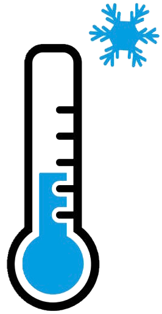
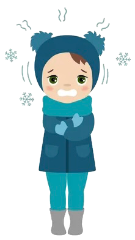
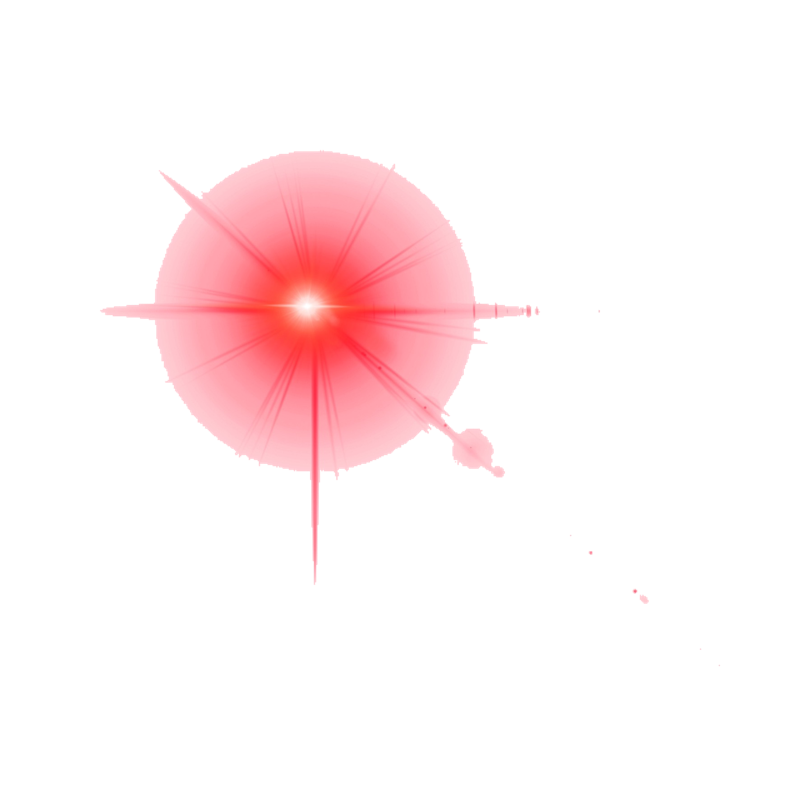
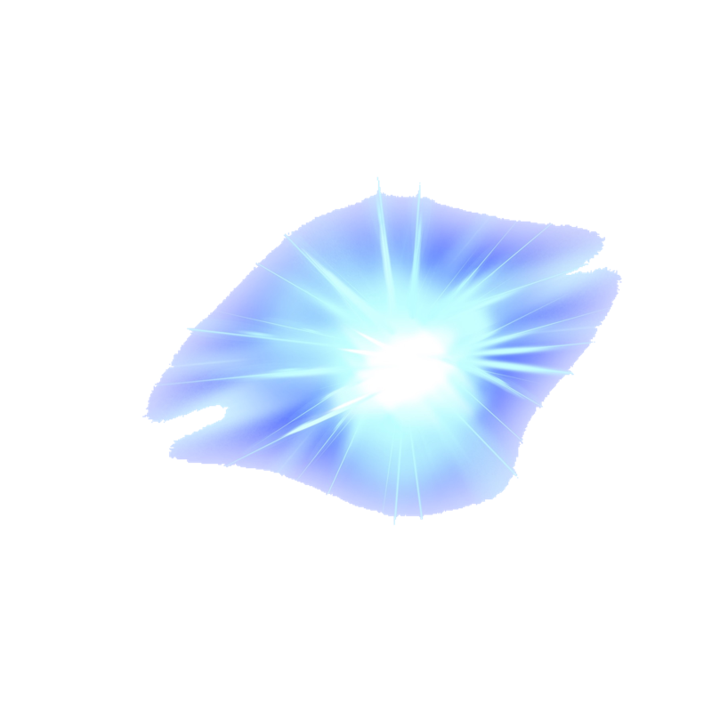
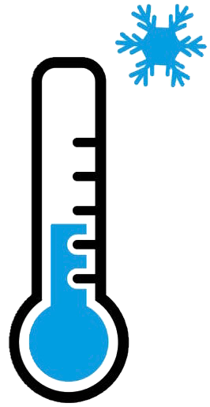
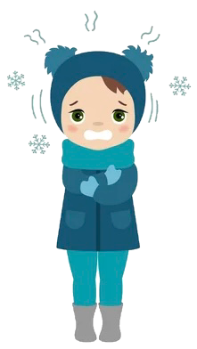
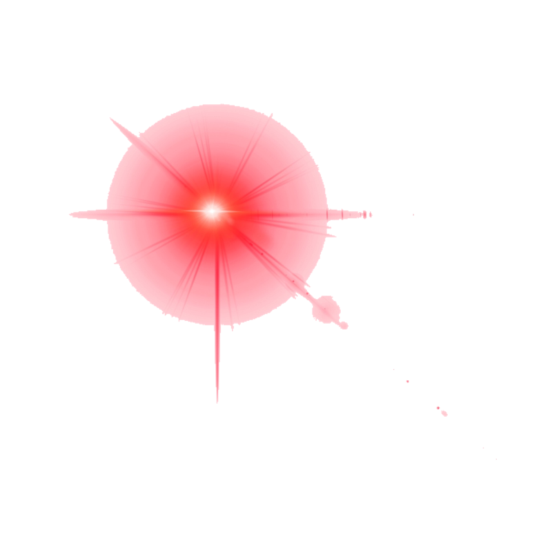
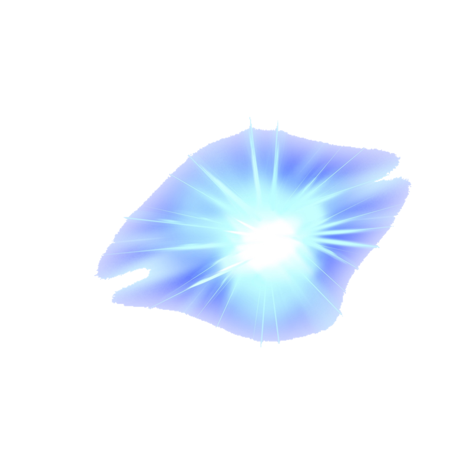
Directions: Drag one of the stars on the right towards ⬅ and away ➡ from the girl and watch thermal radiation 🌡️ in action!
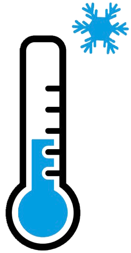
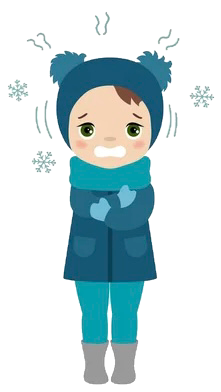
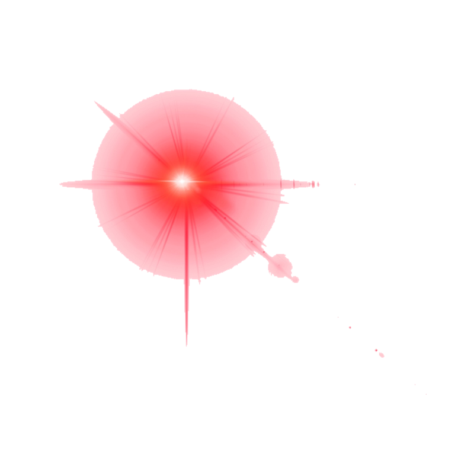
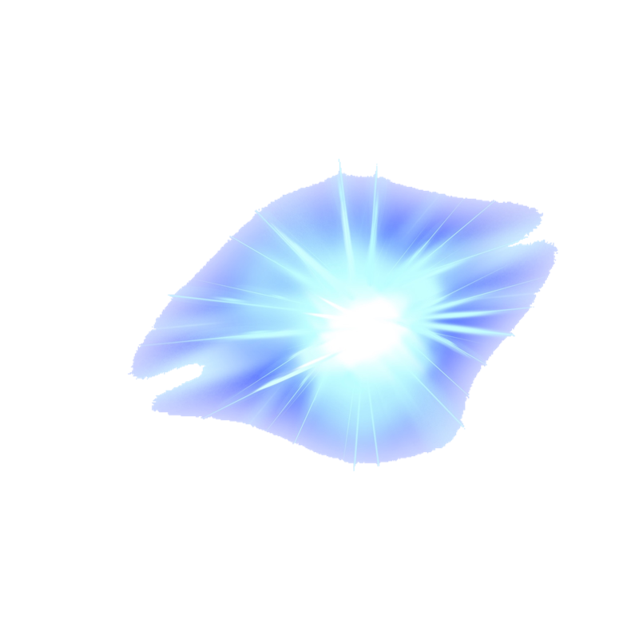
Explanation: According to thermal radiation, hotter 🔥 objects are brighter
and bluer,
while cooler ❄️ objects are
dimmer and redder.